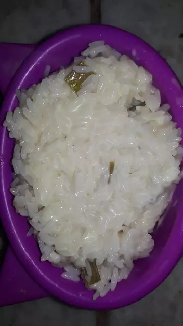

Rice with creamy cheese

Ingredients
- A pint of Water (Approx. 500ml)
- A handful of rice
- 7 Oz. of creamy cheese (Approx. 200gr)
- Salt
Steps
- Put the water in a pot and heat until it boils.
- Add the rice and a pinch of salt.
- Cook the rice until it is soft, then remove the pot from the heat and strain the rice.
- Let the rice cool down and add the cheese.
- Enjoy!
Back to main menu.